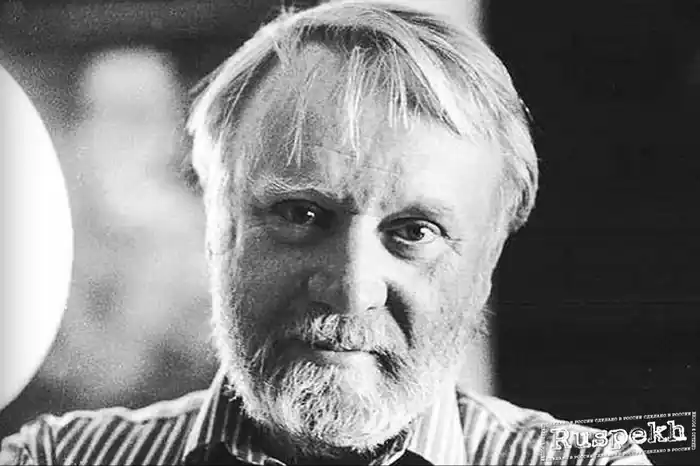
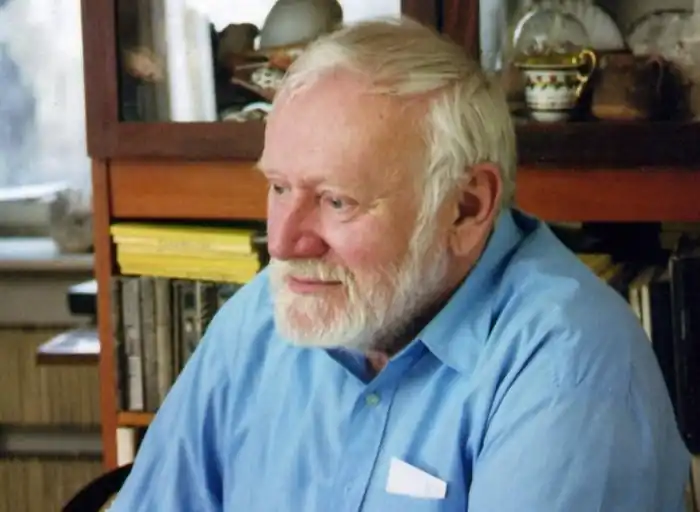

Ім'я письменника-фантаста Кіра Буличова знайоме, мабуть, навіть тим, хто фантастикою не цікавиться. Це звучне ім'я знають і читачі, і глядачі. Хто не дивився мультфільму "Таємниця третьй планети" або кінофільм "Через терни до зірок", зняті за його сценаріями. Це він придумав і створив місто Великий Гусляр, який чомусь люблять відвідувати прибульці з інших світів.
Кір Буличов (справжнє ім'я — Ігор Всеволодович Можейко) народився 18 жовтня 1934 року в Москві.
В 1957 році закінчив Московський Державний педагогічний інститут іноземних мов ним. Моріса Тореза. Працював перекладачем і кореспондентом АПН у Бірмі, кореспондентом у журналі ‘Навколо світу'. В 1962 році закінчив аспірантуру Інституту сходознавства АН СРСР. З 1963 року працює в Інституті сходознавства АН СРСР. У 1965 році захистив кандидатську дисертацію за темою ‘Паганское держава (XI-XIII століття)'. В 1981 році захистив докторську дисертацію за темою ‘Буддійська сангха і держава в Бірмі'. Почав писати фантастику в 1965 році. Перекладав на російську мову фантастичні твори американських письменників. Сценарист. Екранізовано более20 творів. Лауреат Державної премії СРСР 1982 року за сценарій до фільму <Через терни до зірок> і повнометражного мультфільму ‘Таємниця третьої планети'. Лауреат премії фантастики ‘Аеліта-97'. Помер 05.09.2003 у віці 69 років.